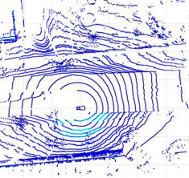
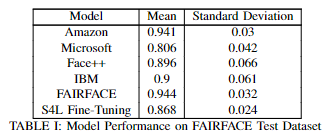

Publications
Lane Line Detection by LiDAR Intensity Value Interpolation
Lane marks are an important aspect for autonomous driving. Autonomous vehicles rely on lane mark information to determine a safe and legal path to drive. In this paper an approach to estimate lane lines on straight or slightly curved roads using a LiDAR unit for autonomous vehicles is presented. By comparing the difference in elevation of LiDAR channels, a drivable region is defined. The presented approach used in this paper differs from previous LiDAR lane line detection methods by reducing the drivable region from three to two dimensions exploring only the x-y trace. In addition, potential lane markings are extracted by filtering a range of intensity values as opposed to the traditional approach of comparing neighboring intensity values. Further, by calculating the standard deviation of the potential lane markings in the y-axis, the data can be further refined to specific points of interest. By applying a statistical approximation, to these points of interest, the results given show a linear approximation of the lane lines.
Comparative Study on Transfer Learning for Object Classification and Detection. In: AI-enabled Technologies for Autonomous and Connected Vehicles

The recent development of deep neural learning achieved remarkable breakthroughs in object classification and detection. Deep learning has the capability of learning features automatically from data using general-purpose earning procedures. However, because deep neural networks require large amounts of data to train the parameters in the network, it is challenging to develop any object classification or detection system with a relatively small dataset. Transfer learning is an important machine learning technique that transfers the learned features in a pre-trained Convolution Neural Network (CNN) model into a new system. In this study, current state-of-the-art CNN models are reviewed in their architectures and characteristics. For the comparative study of transfer learning, the object classification and the detection system are implemented using transfer learning with six state-of-the-art CNN models. The object classification model has achieved an accuracy of 97.01% for the three-class classification task using transfer learning. Furthermore, six different Faster R-CNN architectures are implemented for object detection. The performances of the different transferred models are compared in terms of the accuracy and the deploying speed of the new model. Experiments show that transfer learning saves training time and achieves accurate performance by fine-tuning the pre-existing deep learning model.
An Approach for Reducing Racial Bias in Facial Monitoring Systems
The issue of racial bias in facial monitoring systems is a pressing concern in today’s technological landscape, as these systems have the potential to exacerbate existing inequities and perpetuate discrimination. To effectively reduce bias in pre-existing facial detection system we propose the addition of fine-tuning the model on a select subset underrepresented secondary features, skin tone, facial structure, or hair texture. We propose a novel solution using semi-supervised self-supervised training (S4L). Through S4L training along with the select subset of data this research shows how the quality, not quantity, of data can achieve similar results to current benchmark architectures utilizing a fraction of the training data.